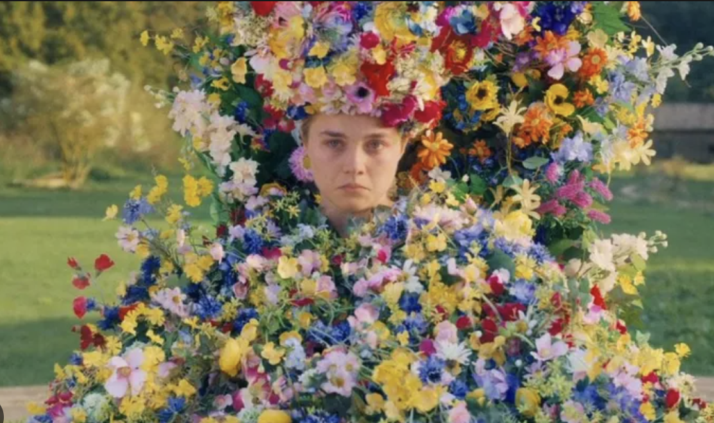
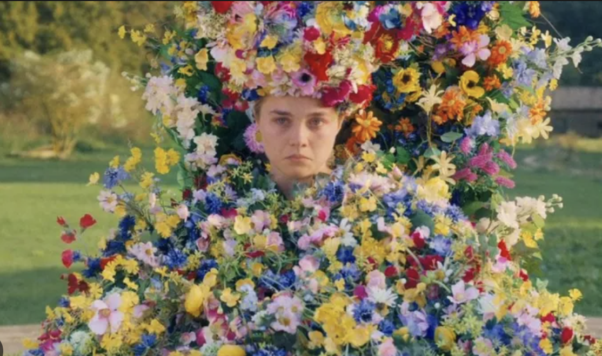
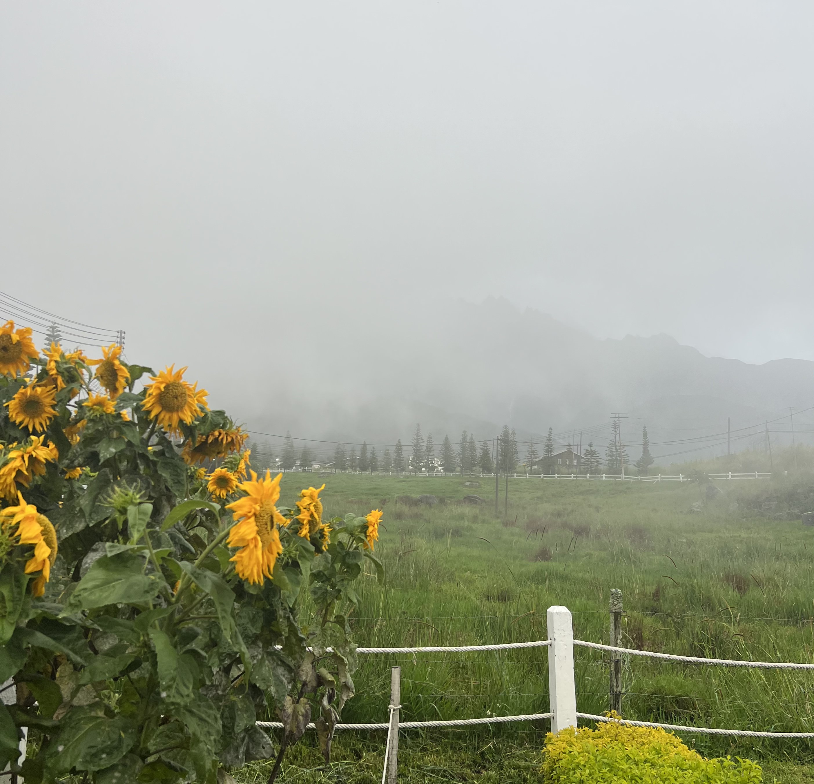
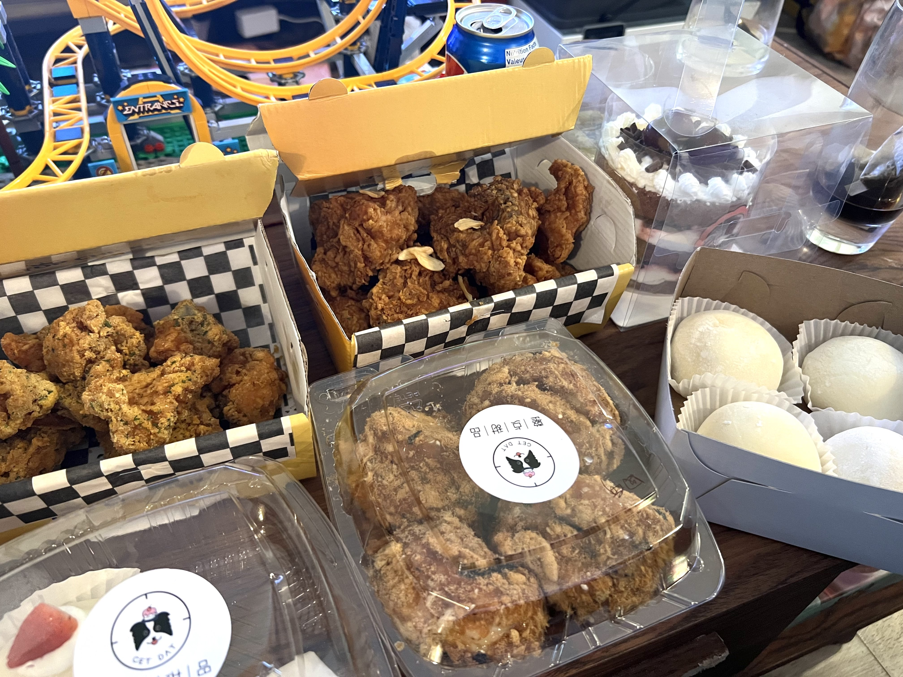
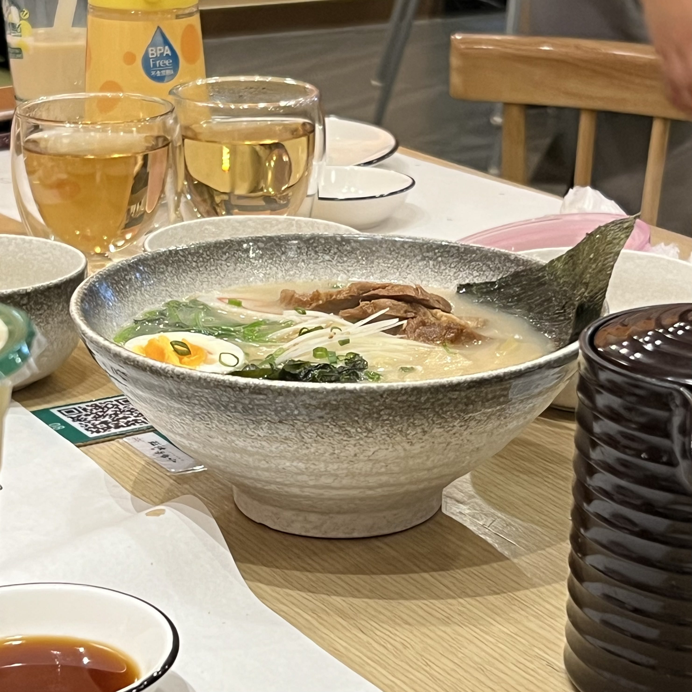

Bio
I'm Eileen, and I've been in Canada since November 2021. I completed my senior year in London, Ontario. It's a beautiful city with wonderful people. When I'm out with my friends, I receive many compliments from strangers about my outfits and other things. It warms my heart and brings me so much joy. I really hope to stay in Canada after I finish university.
Hobbies
I've been into horror, thriller, and supernatural TV shows and movies since I was young, especially those centered around cults now. Some of my favorite films include "The Mist," "Midsommar," "Incantation," and "Hereditary," among others. I always find myself spending a lot of time searching for great shows and movies in these genres.
 

I'm passionate about traveling, and my top destinations include Zurich, Edinburgh, and Kyoto. I have a great fondness for East Asian cuisine and European architecture. My aspiration is to explore all the places on my travel wishlist in the future
  Music
I love listening to K-pop and alternative rock. My favorite band is Wolf Alice, a UK band. I have no idea why they picked this name, but anyway, they are so talented. I hope they will come to Canada someday, maybe in Toronto or other cities close to me, and I will definitely go to their concert.